神山町内にある無料で読める本は
5,124冊
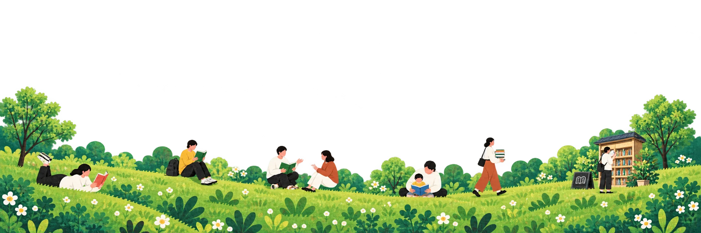
本との出会いは、
まちとの出会い。
神山で暮らすあなたに、
もっと気軽な本との出会いを。
ホンノバは、神山町の
あちこちにある本と、
人をつなぐサービスです。
今の気分や知りたいことから、
気になる一冊を見つける。
そして、その本がある
町の本棚へ出かけてみる。
そこで出会うのは、
本だけじゃないかもしれません。
知らなかった場所。
選ばなかった一冊。
誰かとの、本の話。
いつもの神山で、
まだ知らない出会いを。
さあ、まちの本棚を
覗いてみよう。
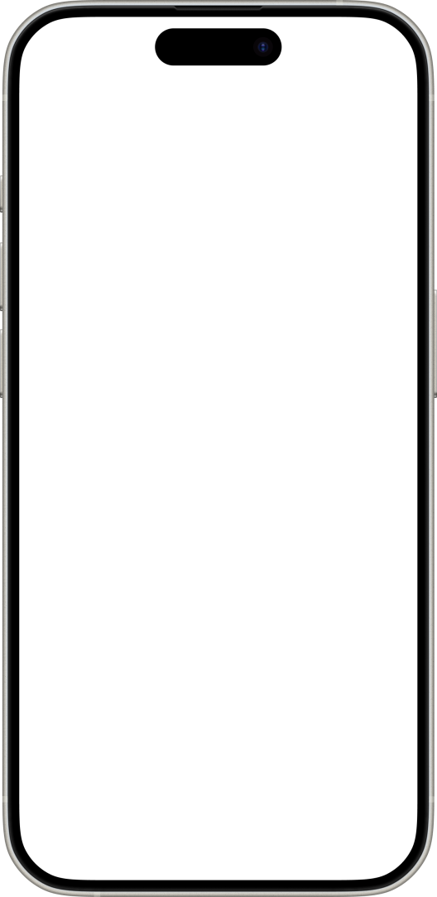
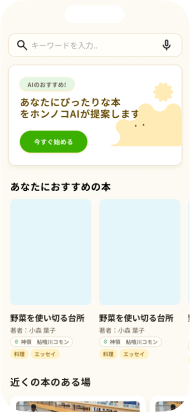
5,124冊
7箇所
広野 広野小学校旧校舎
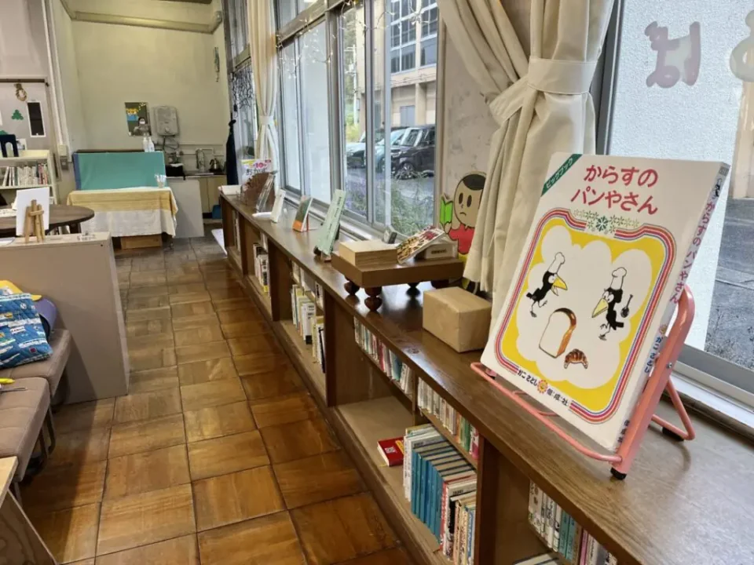
神領 神山まるごと高専HOME
神領
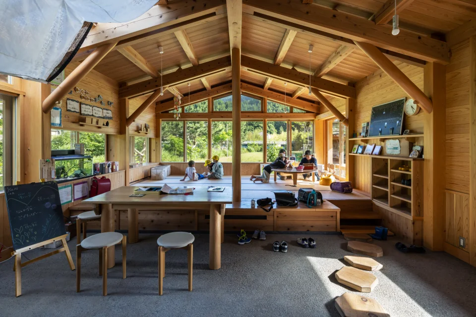
神領
01 / 04
スクロールして、まちの本棚をめぐる何でもない一日に、
小さな楽しみを増やそう。
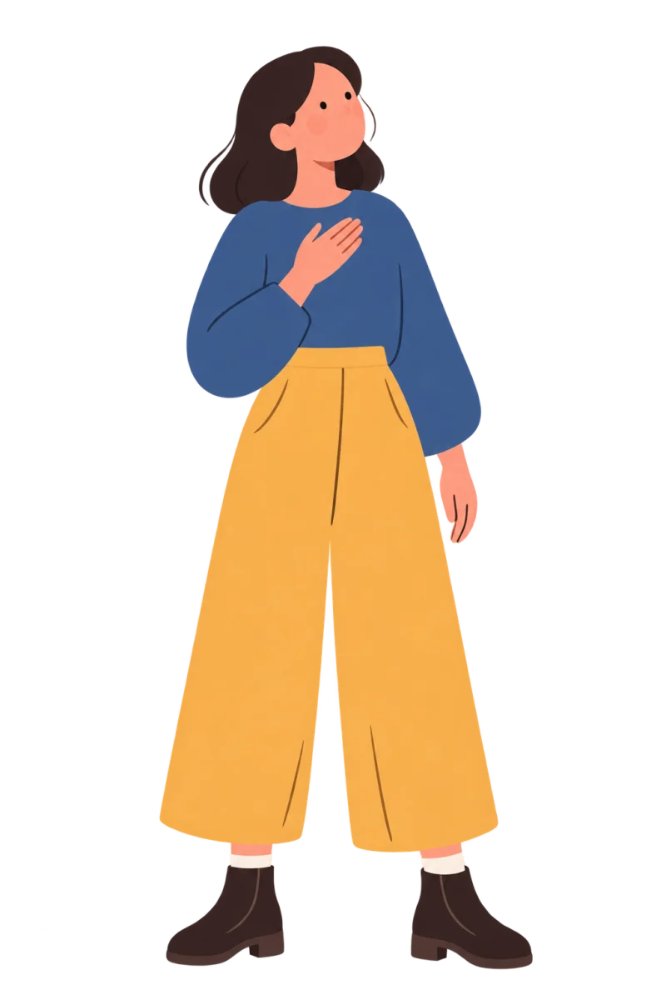
10代女性・神領在住
神山にあるかわからない本をスマホからすぐに知れることが出来たのがとても良かったです。
50代女性・神領在住
AIで今の気分から本を検索する機能がとても便利で、助かります。
30代男性・神領在住
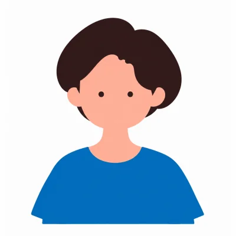
移住してから、本に触れる機会が減り困っていたのですが、素敵なアプリに出会うことができました。
30代女性・神領在住
神山町にもこんな素敵な空間があったのかと、新発見することができました。
10代女性・神領在住
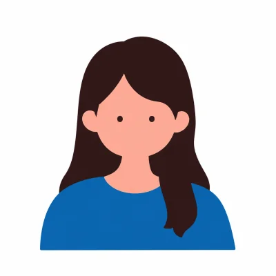
今まで手に取ったことない素敵な本たちに出会う機会が増えました。料理本や旅の本が豊富で、気晴らしになる時間が作れました。
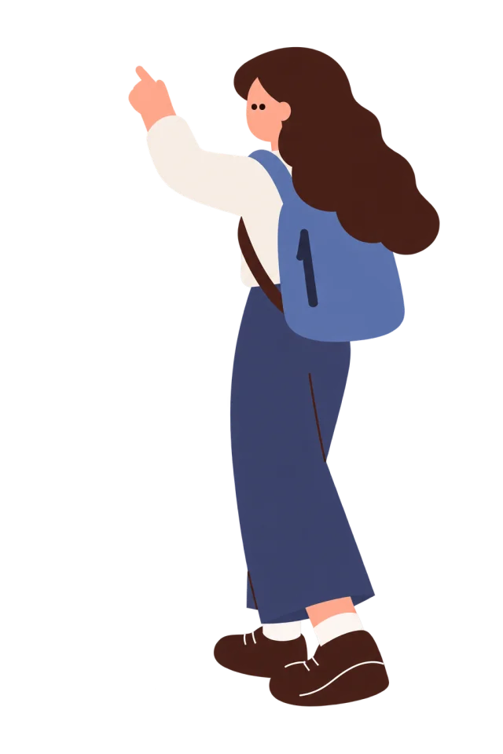
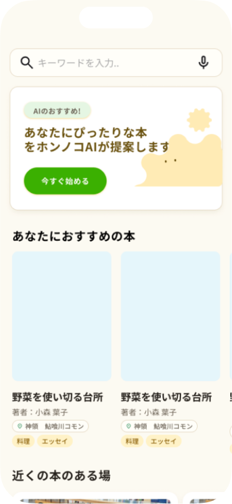
まずは、神山のいろいろな場所にある本をのぞいてみよう。
ホームを眺めながら、
気になる一冊を探せます。
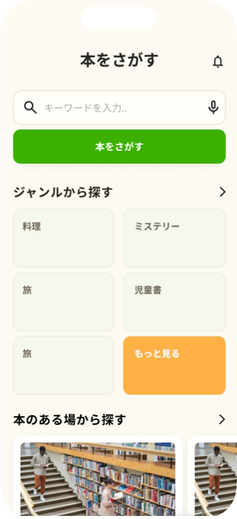
今の気分や知りたいことを選ぶだけ。
あなたに合いそうな本を見つけるお手伝いをします。
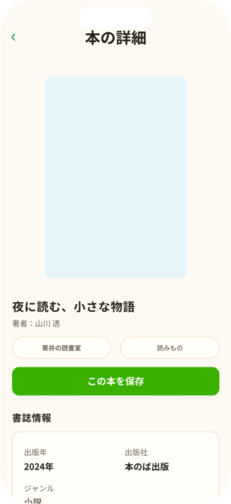
表紙や紹介を眺めて、
「これ読んでみたい！」と思える本を
選びます。
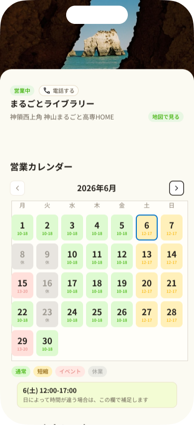
読みたい本が見つかったら、
その本が置いてある神山の本棚へ。
本をきっかけに、いつもの町を少しだけ冒険してみよう。
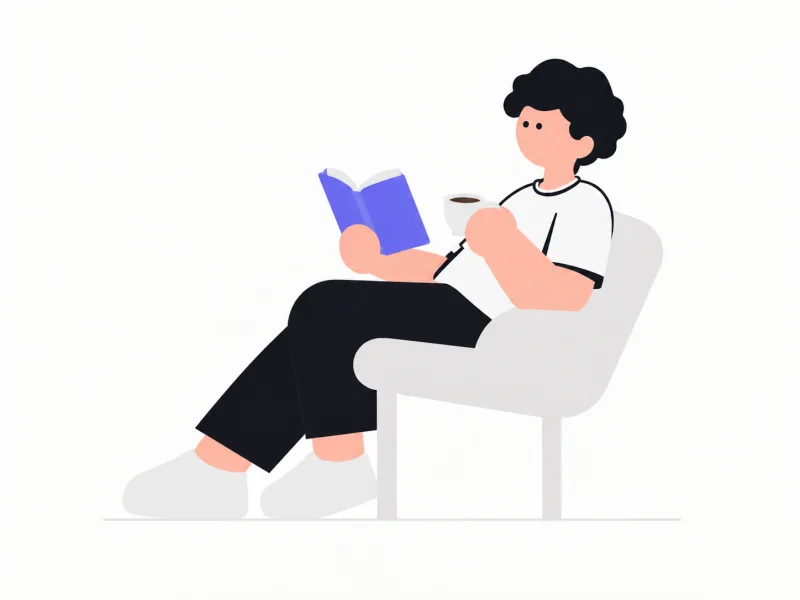
ほんのひろば
まるごとライブラリー
粟カフェ
農村環境改善センター
運営団体の詳しいご紹介は、ただいま準備中です。